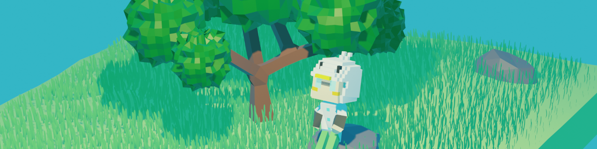

Ashizawa Kamome
ジャンル: SFファンタジー・ミステリー
状態: 連載予定
世界: 聖晶界ゲフィオン/惑星アヴァロン
主人公: シルヴァ・クロノファーデ（27歳、ハーフエルフ）
古代の神話と近未来の魔科学技術が融合した世界、惑星アヴァロン。隕石災害「星裂の隕石」により甚大な被害を受けた近未来都市ヘリオポリス（ノヴァエリア）の郊外を舞台に、星見の塔所属のハーフエルフ研究員シルヴァ・クロノファーデが、行方不明の親友を探すため、宇宙由来の脅威に対抗する新技術を確立しようと奮闘する。
廃墟で出会った自由商人レオニスから手に入れた「不思議なポーション瓶」は、触れる者に過去の幻影を見せる「過去を語る道標」だった。この魔道具を巡り、シルヴァは古の魔王が封印された神話の真実、そしてヴォイドという星界由来の脅威に巻き込まれていく。
論理的思考と直感を持つ研究者シルヴァが、野心家の商人レオニス、古代の秘術を会得した謎のエルフの老人セグ、頑固な技術者ダノクと協力・対立しながら、太古の伝承と近未来の魔科学を繋ぐ道標を追いかけ、世界の破滅を防ぐ戦いに挑む。
ヘリオポリスの廃墟で星見の塔の研究員シルヴァは、自由商人レオニスと出会う。彼が持つ古いポーション瓶に触れた時、不思議な幻影が一瞬だけ視界に映った。 その瓶は、触れる者に過去の思い出を見せる謎の魔道具「過去を語る道標」だった。この出会いが、シルヴァをやがて世界の謎へと導いていく。
公開日：2025年1月1日作品世界の背景となる設定資料です。ストーリーの理解をより深めるためにご参照ください。
遠い昔、エルダリアを統一した光輝の王アーサスが禁断の魔法に手を染め、深淵の徘徊者という魔王へと変貌した。その脅威に立ち向かった無名の守護者の伝説を記した古代書。物語の根底にある神話の真実が記されています。
詳しく読む古代の神話と近未来の科学技術が融合した都市ノヴァエリア。魔科学技術、聖光エネルギー、アストラルパワーなど、作品舞台となる世界の産業・文化・環境について詳しく解説しています。
詳しく読む人間、エルフ、ドワーフ、獣人、ドラゴン族、ノーム、フェアリー、アンデッドなど、ノヴァエリアに共存する多種多様な種族についての記録。それぞれの特性、役割、文化について学ぶことができます。
詳しく読むA.R.C.（Astral Research Center）の中心施設である星見の塔について、その外観、内部施設、機能、運営体制について詳細に記載された資料。シルヴァが所属する施設の全貌を知ることができます。
詳しく読む